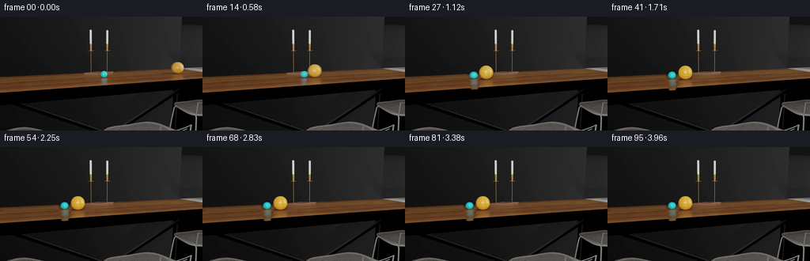
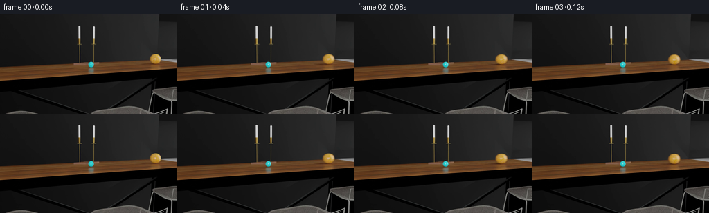

CODING AGENTS AS PIXEL WORLD MODELS
traex/GPT-5.6-Sol · pcve_0109
点击播放 · 原生 RGB 像素
编辑前的完整原视频
上方为编辑结果；原视频是模型获准使用的输入。下方为逐轮保存的编辑候选。
逐轮保存的候选
回放视频、检查图与代码变化。
每份候选均可单独播放。实际图片检查记录在下方工具轨迹中。
候选 01播放与检查图
点击播放 · 原生 RGB 像素


展开代码变化
--- 上一保存版本 +++ 本次保存版本 @@ -0,0 +1,173 @@ +"""Generate the restitution-edited PixelWorld video. + +The cyan marble is the small marble. Restitution controls normal separation +speed at impact, so after contact its separation from the much larger amber +marble is reduced to 5% of the measured factual separation. The edit uses a +clean plate assembled from unoccluded source pixels and relocates the original +rendered cyan marble (including its contact shadow), preserving source lighting +and material appearance. +""" +from pathlib import Path +import numpy as np +from scipy import ndimage +import artifact_io + +CASE_DIR = Path(__file__).resolve().parent + + +def cyan_centres(frames): + """Measure the rendered cyan marble from its distinctive material color.""" + out = [] + yy, xx = np.indices(frames.shape[1:3]) + for frame in frames.astype(np.int16): + r, g, b = np.moveaxis(frame, 2, 0) + mask = ((g > 110) & (b > 110) & (g > 1.70 * r) & + (b > 1.70 * r) & (yy > 50) & (yy < 100)) + y, x = np.where(mask) + out.append((float(x.mean()), float(y.mean()))) + return np.asarray(out) + + +def amber_centres(frames): + """Track the large amber marble using its bright, stable upper highlight.""" + centres = [] + expected = 224.0 + yy, xx = np.indices(frames.shape[1:3]) + for frame in frames.astype(np.int16): + r, g, b = np.moveaxis(frame, 2, 0) + mask = ((r > 130) & (g > 85) & (r > 1.25 * b) & + (yy > 50) & (yy < 90)) + labels, count = ndimage.label(mask) + choices = [] + for label in range(1, count + 1): + y, x = np.where(labels == label) + if len(x) >= 100: + choices.append((abs(float(x.mean()) - expected), + float(x.mean()), float(y.mean()))) + if choices: + _, cx, cy = min(choices) + expected = cx + elif centres: + cx, cy = centres[-1] + else: + cx, cy = 224.0, 64.0 + centres.append((cx, cy)) + return np.asarray(centres) + + +def clean_plate(frames, cyan, amber): + """Median unoccluded source samples for the marble travel corridor.""" + n, h, w, _ = frames.shape + yy, xx = np.indices((h, w)) + valid = np.ones((n, h, w), dtype=bool) + for t in range(n): + # Generous ellipses reject each rendered sphere and its cast/contact + # shadow. Every travel-path pixel is visible in many other frames. + acx = amber[t, 0] + acy = 73.0 + ccx, ccy = cyan[t] + amber_occ = ((xx - acx) / 19.0) ** 2 + ((yy - (acy + 2.0)) / 22.0) ** 2 < 1.0 + cyan_occ = ((xx - ccx) / 10.0) ** 2 + ((yy - (ccy + 5.0)) / 19.0) ** 2 < 1.0 + valid[t] &= ~(amber_occ | cyan_occ) + + work = frames.astype(np.float32) + work[~valid, :] = np.nan + with np.errstate(all="ignore"): + plate = np.nanmedian(work, axis=0) + # Pixels outside the motion corridor are always valid. This fallback is + # merely defensive for any fully occluded antialiased pixel. + fallback = np.median(frames.astype(np.float32), axis=0) + plate = np.where(np.isfinite(plate), plate, fallback) + return np.clip(np.rint(plate), 0, 255).astype(np.uint8) + + +def object_alpha(frame, plate, cx, cy): + """Soft matte for the cyan sphere plus its small contact shadow.""" + h, w, _ = frame.shape + yy, xx = np.indices((h, w)) + roi = ((xx - cx) / 8.5) ** 2 + ((yy - (cy + 5.0)) / 16.0) ** 2 <= 1.0 + difference = np.max(np.abs(frame.astype(np.int16) - plate.astype(np.int16)), axis=2) + material = ((frame[..., 1].astype(np.int16) > 90) & + (frame[..., 2].astype(np.int16) > 90) & + (frame[..., 1].astype(np.int16) > 1.35 * frame[..., 0])) + seed = roi & ((difference > 7) | material) + # Include antialiasing and the attached shadow, but no distant changing + # geometry. A subpixel-soft boundary prevents cutout seams. + seed = ndimage.binary_closing(seed, structure=np.ones((3, 3))) + seed = ndimage.binary_dilation(seed, iterations=1) + alpha = ndimage.gaussian_filter(seed.astype(np.float32), 0.65) + alpha *= roi.astype(np.float32) + return np.clip(alpha, 0.0, 1.0) + + +def shift_premultiplied(rgb, alpha, dx, dy): + """Bilinearly translate an RGBA cutout without dark edge fringing.""" + shifted_a = ndimage.shift(alpha, (dy, dx), order=1, mode="constant", cval=0.0, + prefilter=False) + premul = rgb.astype(np.float32) * alpha[..., None] + shifted_p = ndimage.shift(premul, (dy, dx, 0), order=1, mode="constant", cval=0.0, + prefilter=False) + return shifted_p, np.clip(shifted_a, 0.0, 1.0) + + +def generate(): + source = np.load(CASE_DIR / "source_pixels.npz")["rgb"] + assert source.shape == (96, 144, 256, 3) and source.dtype == np.uint8 + + cyan = cyan_centres(source) + amber = amber_centres(source) + plate = clean_plate(source, cyan, amber) + result = source.astype(np.float32).copy() + + # Frame indices are zero based here. Contact is visible in source frame + # 14 (index 13), and frame 15 is the last near-contact rendering. From + # index 14 onward, restitution scales the excess centre separation beyond + # the contact distance. This directly implements e_new = 0.05 e_old. + contact_index = 14 + contact_gap = float(amber[contact_index, 0] - cyan[contact_index, 0]) + target_x = cyan[:, 0].copy() + for t in range(contact_index, len(source)): + factual_gap = float(amber[t, 0] - cyan[t, 0]) + target_gap = contact_gap + 0.05 * (factual_gap - contact_gap) + target_x[t] = amber[t, 0] - target_gap + + # The rail slopes gently. Obtain the physically supported y coordinate + # from the factual marble's measured x/y path instead of inventing one. + moving = np.arange(0, 39) + order = np.argsort(cyan[moving, 0]) + path_x = cyan[moving, 0][order] + path_y = cyan[moving, 1][order] + # Collapse near-duplicate resting samples for stable interpolation. + rounded = np.round(path_x, 2) + unique_x, inv = np.unique(rounded, return_inverse=True) + unique_y = np.zeros_like(unique_x) + for k in range(len(unique_x)): + unique_y[k] = path_y[inv == k].mean() + target_y = np.interp(target_x, unique_x, unique_y, + left=unique_y[0], right=unique_y[-1]) + + # Divergence at the first edited frame is only a fraction of a pixel; keep + # it source-exact. Subsequent frames relocate the original high-quality + # rendered marble and shadow. + for t in range(contact_index + 1, len(source)): + old_x, old_y = cyan[t] + dx = float(target_x[t] - old_x) + dy = float(target_y[t] - old_y) + if abs(dx) + abs(dy) < 0.20: + continue + alpha = object_alpha(source[t], plate, old_x, old_y) + + # Restore only pixels influenced by the factual small marble. + base = result[t] * (1.0 - alpha[..., None]) + plate.astype(np.float32) * alpha[..., None] + + # Place its original source rendering at the low-restitution location. + premul, moved_alpha = shift_premultiplied(source[t], alpha, dx, dy) + composed = premul + base * (1.0 - moved_alpha[..., None]) + result[t] = composed + + return np.clip(np.rint(result), 0, 255).astype(np.uint8) + + +if __name__ == "__main__": + frames = generate() + artifact_io.save(frames, CASE_DIR)
候选 02播放与检查图
点击播放 · 原生 RGB 像素

展开代码变化
--- 上一保存版本
+++ 本次保存版本
@@ -81,15 +81,23 @@
return np.clip(np.rint(plate), 0, 255).astype(np.uint8)
-def object_alpha(frame, plate, cx, cy):
- """Soft matte for the cyan sphere plus its small contact shadow."""
+def object_alpha(frame, plate, cx, cy, kind="cyan"):
+ """Soft matte for a source sphere plus its attached contact shadow."""
h, w, _ = frame.shape
yy, xx = np.indices((h, w))
- roi = ((xx - cx) / 8.5) ** 2 + ((yy - (cy + 5.0)) / 16.0) ** 2 <= 1.0
+ if kind == "cyan":
+ roi = ((xx - cx) / 8.5) ** 2 + ((yy - (cy + 5.0)) / 16.0) ** 2 <= 1.0
+ else:
+ # amber_centres follows the upper highlight (y about 68), whereas the
+ # geometric centre and attached shadow are lower.
+ roi = ((xx - cx) / 15.5) ** 2 + ((yy - 74.0) / 19.0) ** 2 <= 1.0
difference = np.max(np.abs(frame.astype(np.int16) - plate.astype(np.int16)), axis=2)
- material = ((frame[..., 1].astype(np.int16) > 90) &
- (frame[..., 2].astype(np.int16) > 90) &
- (frame[..., 1].astype(np.int16) > 1.35 * frame[..., 0]))
+ if kind == "cyan":
+ material = ((frame[..., 1].astype(np.int16) > 90) &
+ (frame[..., 2].astype(np.int16) > 90) &
+ (frame[..., 1].astype(np.int16) > 1.35 * frame[..., 0]))
+ else:
+ material = np.zeros((h, w), dtype=bool)
seed = roi & ((difference > 7) | material)
# Include antialiasing and the attached shadow, but no distant changing
# geometry. A subpixel-soft boundary prevents cutout seams.
@@ -122,14 +130,22 @@
# Frame indices are zero based here. Contact is visible in source frame
# 14 (index 13), and frame 15 is the last near-contact rendering. From
# index 14 onward, restitution scales the excess centre separation beyond
- # the contact distance. This directly implements e_new = 0.05 e_old.
+ # the contact distance. Preserve the pair's centre of mass: restitution
+ # changes internal impulse, not total momentum. The measured radius ratio
+ # is about 1:2, hence the equal-density mass ratio is about 1:8.
+ # This directly implements e_new = 0.05 e_old while also applying the
+ # corresponding (smaller) consequence to the large marble.
contact_index = 14
contact_gap = float(amber[contact_index, 0] - cyan[contact_index, 0])
+ mass_ratio = 0.125 # small / large
target_x = cyan[:, 0].copy()
+ target_amber_x = amber[:, 0].copy()
for t in range(contact_index, len(source)):
factual_gap = float(amber[t, 0] - cyan[t, 0])
target_gap = contact_gap + 0.05 * (factual_gap - contact_gap)
- target_x[t] = amber[t, 0] - target_gap
+ centre_of_mass = (amber[t, 0] + mass_ratio * cyan[t, 0]) / (1.0 + mass_ratio)
+ target_amber_x[t] = centre_of_mass + mass_ratio * target_gap / (1.0 + mass_ratio)
+ target_x[t] = centre_of_mass - target_gap / (1.0 + mass_ratio)
# The rail slopes gently. Obtain the physically supported y coordinate
# from the factual marble's measured x/y path instead of inventing one.
@@ -147,22 +163,29 @@
left=unique_y[0], right=unique_y[-1])
# Divergence at the first edited frame is only a fraction of a pixel; keep
- # it source-exact. Subsequent frames relocate the original high-quality
- # rendered marble and shadow.
+ # it source-exact. Subsequent frames relocate both original high-quality
+ # rendered marbles and their contact shadows.
for t in range(contact_index + 1, len(source)):
old_x, old_y = cyan[t]
- dx = float(target_x[t] - old_x)
- dy = float(target_y[t] - old_y)
- if abs(dx) + abs(dy) < 0.20:
+ cyan_dx = float(target_x[t] - old_x)
+ cyan_dy = float(target_y[t] - old_y)
+ amber_dx = float(target_amber_x[t] - amber[t, 0])
+ if abs(cyan_dx) + abs(cyan_dy) + abs(amber_dx) < 0.20:
continue
- alpha = object_alpha(source[t], plate, old_x, old_y)
+ cyan_alpha = object_alpha(source[t], plate, old_x, old_y, "cyan")
+ amber_alpha = object_alpha(source[t], plate, amber[t, 0], amber[t, 1], "amber")
- # Restore only pixels influenced by the factual small marble.
- base = result[t] * (1.0 - alpha[..., None]) + plate.astype(np.float32) * alpha[..., None]
+ # Restore only pixels influenced by the two factual marbles.
+ erase = np.maximum(cyan_alpha, amber_alpha)
+ base = result[t] * (1.0 - erase[..., None]) + plate.astype(np.float32) * erase[..., None]
- # Place its original source rendering at the low-restitution location.
- premul, moved_alpha = shift_premultiplied(source[t], alpha, dx, dy)
+ # Place the large marble first and the small marble second. They are
+ # tangent or slightly separated, but this order also gives sensible
+ # edge occlusion in the subpixel contact region.
+ premul, moved_alpha = shift_premultiplied(source[t], amber_alpha, amber_dx, 0.0)
composed = premul + base * (1.0 - moved_alpha[..., None])
+ premul, moved_alpha = shift_premultiplied(source[t], cyan_alpha, cyan_dx, cyan_dy)
+ composed = premul + composed * (1.0 - moved_alpha[..., None])
result[t] = composed
return np.clip(np.rint(result), 0, 255).astype(np.uint8)
候选 03播放与检查图
可观测工具轨迹
实际执行的命令与返回图片。
命令 1exit 0
/bin/bash -lc "cat prompt.txt && printf '\\n--- RULES ---\\n' && cat GENERATION_RULES.md"
命令 2exit 0
/bin/bash -lc "find . -maxdepth 3 -type f -printf '%p\\n' | sort && printf '\\n--- dirs ---\\n' && find . -maxdepth 2 -type d -printf '%p\\n' | sort"
命令 3exit 0
/bin/bash -lc "cat source_info.json; printf '\\n--- spec ---\\n'; cat task_spec.json; printf '\\n--- artifact ---\\n'; sed -n '1,240p' artifact_io.py"
命令 4exit 0
/bin/bash -lc "python - <<'PY'
import numpy as np
from PIL import Image
x=np.load('source_pixels.npz'); print(x.files)
a=x[x.files[0]]; print(a.shape,a.dtype,a.min(),a.max())
for p in ['first_frame.png','source_inspection.png']:
im=Image.open(p); print(p, im.size, im.mode)
PY"命令 5exit 0
/bin/bash -lc "python - <<'PY'
import numpy as np
from collections import Counter
x=np.load('source_pixels.npz')['rgb']
for t in [0,1,10,20,30,40,50,60,70,80,90,95]:
a=x[t]
# quantize /8
q=(a//8)*8
c=Counter(map(tuple,q.reshape(-1,3)))
print('\\nframe',t,'mean',a.mean((0,1)).round(1))
print(c.most_common(15))
PY"命令 6exit 0
/bin/bash -lc "cat > .tmp/analyze.py <<'PY'
import numpy as np
from scipy import ndimage
x=np.load('source_pixels.npz')['rgb'].astype(int)
# temporal range and std
rg=x.max(0)-x.min(0); m=rg.max(2)
for th in [5,10,20,40,80]:
z=m>th; lab,n=ndimage.label(z)
comps=[]
for k in range(1,n+1):
yy,xx=np.where(lab==k); s=len(xx)
if s>2: comps.append((s,xx.min(),yy.min(),xx.max(),yy.max()))
print('range>',th,sorted(comps,reverse=True)[:20])
# diff adjacent components
for t in range(1,96):
d=np.max(abs(x[t]-x[t-1]),2)>10
d=ndimage.binary_dilation(d,iterations=1)
lab,n=ndimage.label(d)
comps=[]
for k in range(1,n+1):
yy,xx=np.where(lab==k); s=len(xx)
if s>4: comps.append((s,round(xx.mean(),1),round(yy.mean(),1),xx.min(),yy.min(),xx.max(),yy.max()))
if t<15 or t%5==0: print(t,sorted(comps,reverse=True)[:8])
PY
python .tmp/analyze.py"命令 7exit 0
/bin/bash -lc "python - <<'PY'
import numpy as np
x=np.load('source_pixels.npz')['rgb']
for t in [0,8,16,24,32,40,60,95]:
a=x[t]
print('\\nFRAME',t)
for y in range(45,110,2):
s=''
for xx in range(0,256,2):
p=a[y:y+2,xx:xx+2].mean((0,1)); r,g,b=p; v=max(p)
if v<8: c=' '
elif r>g*1.25 and r>b*1.5 and r>45: c='W'
elif b>r*1.15 and b>g*1.05 and b>35: c='B'
elif r>g*1.15 and r>b*1.1 and r>35: c='r'
elif v>100: c='@'
elif v>70: c='#'
elif v>45: c='o'
elif v>28: c='.'
else: c=','
s+=c
print(s)
PY"命令 8exit 0
/bin/bash -lc "python - <<'PY'
import numpy as np
from scipy import ndimage
x=np.load('source_pixels.npz')['rgb'].astype(np.int16)
b=np.median(x,axis=0)
for t in range(0,61):
d=np.max(abs(x[t]-b),2)
m=(d>12); m[:45]=0;m[105:]=0
m=ndimage.binary_opening(m,np.ones((2,2))); m=ndimage.binary_dilation(m,iterations=1)
lab,n=ndimage.label(m)
cs=[]
for k in range(1,n+1):
yy,xx=np.where(lab==k); s=len(xx)
if s>15: cs.append((s,round(xx.mean(),1),round(yy.mean(),1),xx.min(),yy.min(),xx.max(),yy.max(),round(d[lab==k].mean(),1)))
print(t, sorted(cs,reverse=True)[:5])
PY"命令 9exit 0
/bin/bash -lc "python - <<'PY'
import numpy as np
from scipy import ndimage
x=np.load('source_pixels.npz')['rgb'].astype(int)
for t in [0,5,10,12,14,16,18,20,22,24,28,32,36,40,60,95]:
print('\\n',t)
# row summaries, high chroma / bright object around key x intervals
for R in [(0,30),(30,80),(80,115),(115,145),(140,190),(190,240)]:
a=x[t,:,R[0]:R[1]]
# object zone y50:100, color brightness/chroma summary pixels >70
yy,xx=np.indices(a.shape[:2]); lum=a.mean(2); ch=a.max(2)-a.min(2)
m=(yy>=48)&(yy<100)&((lum>60)|(ch>35))
if m.sum():
print(R,'n',m.sum(),'ctr', (round((xx[m]+R[0]).mean(),1),round(yy[m].mean(),1)), 'box',(xx[m].min()+R[0],yy[m].min(),xx[m].max()+R[0],yy[m].max()),'rgb',np.median(a[m],0).astype(int))
PY"命令 10exit 0
/bin/bash -lc "python - <<'PY'
import numpy as np
from scipy.cluster.vq import kmeans2
x=np.load('source_pixels.npz')['rgb']
for t,cx,cy,sz in [(0,223,67,15),(0,130,76,15),(0,98,75,18),(16,130,73,18),(20,102,75,30),(32,17,82,18),(40,98,75,18)]:
a=x[t,max(0,cy-sz):cy+sz+1,max(0,cx-sz):cx+sz+1]
cen,lab=kmeans2(a.reshape(-1,3).astype(float),8,minit='points',seed=3)
cnt=np.bincount(lab,minlength=8); order=np.argsort(-cnt)
print('\\n',t,cx,cy,a.shape)
for o in order:print(cnt[o],np.round(cen[o],1))
PY"命令 11exit 0
/bin/bash -lc "python - <<'PY'
import numpy as np
from scipy import ndimage
x=np.load('source_pixels.npz')['rgb']
# list cyan, yellow bright, gray bright components per frame
for t in range(96):
a=x[t].astype(int); r,g,b=np.moveaxis(a,2,0)
masks={'cyan':(g>120)&(b>120)&(g>r*1.8),'yellow':(r>120)&(g>90)&(b<100)&(r>1.15*g),'white':(r>90)&(g>90)&(b>80)&(abs(r-g)<35)}
vals=[]
for name,m in masks.items():
yy,xx=np.where(m)
if len(xx): vals.append(name+':'+str((len(xx),round(xx.mean(),1),round(yy.mean(),1),xx.min(),yy.min(),xx.max(),yy.max())))
if t<45 or t%10==0: print(t,*vals)
PY"命令 12exit 0
/bin/bash -lc "cat > .tmp/tracks.py <<'PY'
import numpy as np
from scipy import ndimage
x=np.load('source_pixels.npz')['rgb'].astype(float)
clean=np.median(x[:39],axis=0)
# cyan criterion direct
for t in range(96):
a=x[t]; r,g,b=np.moveaxis(a,2,0); m=(g>110)&(b>110)&(g>1.7*r)&(b>1.7*r)&(np.indices(r.shape)[0]>50)&(np.indices(r.shape)[0]<100)
yy,xx=np.where(m)
cyan=(xx.mean(),yy.mean()) if len(xx)>10 else (np.nan,np.nan)
# diff, suppress cyan hues, find components > 100 in region
d=np.max(abs(a-clean),2); md=(d>15)&(np.indices(d.shape)[0]>45)&(np.indices(d.shape)[0]<100)&~ndimage.binary_dilation(m,iterations=3)
md=ndimage.binary_closing(md,np.ones((2,2))); lab,n=ndimage.label(md)
comps=[]
for k in range(1,n+1):
yy,xx=np.where(lab==k);
if len(xx)>30:
ww=d[yy,xx]; comps.append((len(xx),(xx*ww).sum()/ww.sum(),(yy*ww).sum()/ww.sum(),xx.min(),yy.min(),xx.max(),yy.max()))
print(t, 'C %.1f %.1f'%cyan, sorted(comps,reverse=True)[:4])
PY
python .tmp/tracks.py > .tmp/tracks.txt
sed -n '1,50p' .tmp/tracks.txt"命令 13exit 0
/bin/bash -lc "python - <<'PY'
import numpy as np
x=np.load('source_pixels.npz')['rgb'].astype(int)
b=np.empty_like(x[0]); b[:,:118]=x[0,:,:118]; b[:,118:]=np.median(x[40:80,:,118:],axis=0).astype(int)
for t,cx,cy,hw,hh in [(0,223,68,18,18),(0,131,76,12,16),(20,119,74,18,18),(20,81,76,12,16),(38,98,75,18,18)]:
print('\\n',t,cx,cy)
d=np.max(abs(x[t]-b),2)
for y in range(cy-hh,cy+hh+1):
print(''.join('@' if d[y,z]>40 else '#' if d[y,z]>20 else 'o' if d[y,z]>8 else '.' if d[y,z]>3 else ' ' for z in range(cx-hw,cx+hw+1)))
PY"命令 14exit 0
/bin/bash -lc "python - <<'PY'
import numpy as np
x=np.load('source_pixels.npz')['rgb'].astype(int)
B=np.median(x[40:80],axis=0).astype(int)
for t, guess in [(0,223),(5,193),(10,163),(12,152),(13,147),(14,141),(15,137),(20,119),(25,105),(30,99)]:
d=np.max(abs(x[t]-B),2)
# within y50:95 and guess+-20, moments by thresholds
print('\\nt',t)
for th in [5,8,12,20,30,50,80]:
yy,xx=np.where((d>th)&(np.indices(d.shape)[0]>=50)&(np.indices(d.shape)[0]<95)&(np.indices(d.shape)[1]>=guess-20)&(np.indices(d.shape)[1]<=guess+20))
if len(xx): print(th,len(xx), (xx.min(),yy.min(),xx.max(),yy.max()), (round(xx.mean(),2),round(yy.mean(),2)), 'weighted', (round((xx*d[yy,xx]).sum()/d[yy,xx].sum(),2),round((yy*d[yy,xx]).sum()/d[yy,xx].sum(),2)))
PY"命令 15exit 0
/bin/bash -lc "python - <<'PY'
import numpy as np
x=np.load('source_pixels.npz')['rgb'].astype(int)
for a,b in [(40,41),(40,50),(50,60),(0,40),(0,1)]:
d=abs(x[a]-x[b]); print(a,b,'mae',d.mean(),'max',d.max(),'pix', (d.max(2)>2).sum(),(d.max(2)>10).sum())
# compare static zones
for sl in [slice(0,50),slice(105,144)]:
dd=d[:,sl] if False else None
PY"命令 16exit 0
/bin/bash -lc "python - <<'PY'
import numpy as np
x=np.load('source_pixels.npz')['rgb'].astype(int)
for t,cx in [(0,224),(5,193),(10,163),(12,150),(13,144),(14,139),(15,134),(16,130),(20,113),(25,102),(30,99),(38,98)]:
a=x[t];r,g,b=np.moveaxis(a,2,0); yy0,xx0=np.indices(r.shape)
local=(abs(xx0-cx)<18)&(yy0>45)&(yy0<95)
print('\\n',t,cx)
for name,m in [('bright',(r>130)&(g>85)&(r>1.25*b)),('gold',(r>150)&(g>100)&(b<130)),('hi',(r>170)&(g>110)&(b<140)),('sat',(r-g>30)&(g-b>20)&(r>120))]:
m&=local; yy,xx=np.where(m)
print(name,len(xx), (round(xx.mean(),2),round(yy.mean(),2)) if len(xx) else '')
PY"命令 17exit 1
/bin/bash -lc "python - <<'PY'
import numpy as np
from scipy import ndimage
x=np.load('source_pixels.npz')['rgb'].astype(int)
for t in range(96):
a=x[t]; r,g,b=np.moveaxis(a,2,0); yy0,xx0=np.indices(r.shape)
# cyan region centroid and gold ball centroid exclude static x<80? Track by nearest expected
mc=(g>110)&(b>110)&(g>1.7*r)&(b>1.7*r)&(yy0>50)&(yy0<100)
yy,xx=np.where(mc); c=(xx.mean(),yy.mean())
# all strong gold pixels around inferred center manually via component; label mask
mg=(r>130)&(g>85)&(r>1.25*b)&(yy0>50)&(yy0<95)
lab,n=ndimage.label(mg)
cs=[]
for k in range(1,n+1):
yy,xx=np.where(lab==k)
if len(xx)>20:cs.append((len(xx),xx.mean(),yy.mean(),xx.min(),xx.max()))
print(t,round(c[0],2),round(c[1],2),sorted(cs,reverse=True)[:4])
PY > .tmp/colortracks.txt
head -45 .tmp/colortracks.txt"命令 18exit 0
/bin/bash -lc "python - <<'PY' > .tmp/colortracks.txt
import numpy as np
from scipy import ndimage
x=np.load('source_pixels.npz')['rgb'].astype(int)
for t in range(96):
a=x[t]; r,g,b=np.moveaxis(a,2,0); yy0,xx0=np.indices(r.shape)
mc=(g>110)&(b>110)&(g>1.7*r)&(b>1.7*r)&(yy0>50)&(yy0<100)
yy,xx=np.where(mc); c=(xx.mean(),yy.mean())
mg=(r>130)&(g>85)&(r>1.25*b)&(yy0>50)&(yy0<95)
lab,n=ndimage.label(mg)
cs=[]
for k in range(1,n+1):
yy,xx=np.where(lab==k)
if len(xx)>20:cs.append((len(xx),round(xx.mean(),1),round(yy.mean(),1),xx.min(),xx.max()))
print(t,round(c[0],2),round(c[1],2),sorted(cs,reverse=True)[:4])
PY
head -45 .tmp/colortracks.txt"命令 19exit 0
/bin/bash -lc "cat > generate.py <<'PY'
\"\"\"Generate the restitution-edited PixelWorld video.
The cyan marble is the small marble. Restitution controls normal separation
speed at impact, so after contact its separation from the much larger amber
marble is reduced to 5% of the measured factual separation. The edit uses a
clean plate assembled from unoccluded source pixels and relocates the original
rendered cyan marble (including its contact shadow), preserving source lighting
and material appearance.
\"\"\"
from pathlib import Path
import numpy as np
from scipy import ndimage
import artifact_io
CASE_DIR = Path(__file__).resolve().parent
def cyan_centres(frames):
\"\"\"Measure the rendered cyan marble from its distinctive material color.\"\"\"
out = []
yy, xx = np.indices(frames.shape[1:3])
for frame in frames.astype(np.int16):
r, g, b = np.moveaxis(frame, 2, 0)
mask = ((g > 110) & (b > 110) & (g > 1.70 * r) &
(b > 1.70 * r) & (yy > 50) & (yy < 100))
y, x = np.where(mask)
out.append((float(x.mean()), float(y.mean())))
return np.asarray(out)
def amber_centres(frames):
\"\"\"Track the large amber marble using its bright, stable upper highlight.\"\"\"
centres = []
expected = 224.0
yy, xx = np.indices(frames.shape[1:3])
for frame in frames.astype(np.int16):
r, g, b = np.moveaxis(frame, 2, 0)
mask = ((r > 130) & (g > 85) & (r > 1.25 * b) &
(yy > 50) & (yy < 90))
labels, count = ndimage.label(mask)
choices = []
for label in range(1, count + 1):
y, x = np.where(labels == label)
if len(x) >= 100:
choices.append((abs(float(x.mean()) - expected),
float(x.mean()), float(y.mean())))
if choices:
_, cx, cy = min(choices)
expected = cx
elif centres:
cx, cy = centres[-1]
else:
cx, cy = 224.0, 64.0
centres.append((cx, cy))
return np.asarray(centres)
def clean_plate(frames, cyan, amber):
\"\"\"Median unoccluded source samples for the marble travel corridor.\"\"\"
n, h, w, _ = frames.shape
yy, xx = np.indices((h, w))
valid = np.ones((n, h, w), dtype=bool)
for t in range(n):
# Generous ellipses reject each rendered sphere and its cast/contact
# shadow. Every travel-path pixel is visible in many other frames.
acx = amber[t, 0]
acy = 73.0
ccx, ccy = cyan[t]
amber_occ = ((xx - acx) / 19.0) ** 2 + ((yy - (acy + 2.0)) / 22.0) ** 2 < 1.0
cyan_occ = ((xx - ccx) / 10.0) ** 2 + ((yy - (ccy + 5.0)) / 19.0) ** 2 < 1.0
valid[t] &= ~(amber_occ | cyan_occ)
work = frames.astype(np.float32)
work[~valid, :] = np.nan
with np.errstate(all=\"ignore\"):
plate = np.nanmedian(work, axis=0)
# Pixels outside the motion corridor are always valid. This fallback is
# merely defensive for any fully occluded antialiased pixel.
fallback = np.median(frames.astype(np.float32), axis=0)
plate = np.where(np.isfinite(plate), plate, fallback)
return np.clip(np.rint(plate), 0, 255).astype(np.uint8)
def object_alpha(frame, plate, cx, cy):
\"\"\"Soft matte for the cyan sphere plus its small contact shadow.\"\"\"
h, w, _ = frame.shape
yy, xx = np.indices((h, w))
roi = ((xx - cx) / 8.5) ** 2 + ((yy - (cy + 5.0)) / 16.0) ** 2 <= 1.0
difference = np.max(np.abs(frame.astype(np.int16) - plate.astype(np.int16)), axis=2)
material = ((frame[..., 1].astype(np.int16) > 90) &
(frame[..., 2].astype(np.int16) > 90) &
(frame[..., 1].astype(np.int16) > 1.35 * frame[..., 0]))
seed = roi & ((difference > 7) | material)
# Include antialiasing and the attached shadow, but no distant changing
# geometry. A subpixel-soft boundary prevents cutout seams.
seed = ndimage.binary_closing(seed, structure=np.ones((3, 3)))
seed = ndimage.binary_dilation(seed, iterations=1)
alpha = ndimage.gaussian_filter(seed.astype(np.float32), 0.65)
alpha *= roi.astype(np.float32)
return np.clip(alpha, 0.0, 1.0)
def shift_premultiplied(rgb, alpha, dx, dy):
\"\"\"Bilinearly translate an RGBA cutout without dark edge fringing.\"\"\"
shifted_a = ndimage.shift(alpha, (dy, dx), order=1, mode=\"constant\", cval=0.0,
prefilter=False)
premul = rgb.astype(np.float32) * alpha[..., None]
shifted_p = ndimage.shift(premul, (dy, dx, 0), order=1, mode=\"constant\", cval=0.0,
prefilter=False)
return shifted_p, np.clip(shifted_a, 0.0, 1.0)
def generate():
source = np.load(CASE_DIR / \"source_pixels.npz\")[\"rgb\"]
assert source.shape == (96, 144, 256, 3) and source.dtype == np.uint8
cyan = cyan_centres(source)
amber = amber_centres(source)
plate = clean_plate(source, cyan, amber)
result = source.astype(np.float32).copy()
# Frame indices are zero based here. Contact is visible in source frame
# 14 (index 13), and frame 15 is the last near-contact rendering. From
# index 14 onward, restitution scales the excess centre separation beyond
# the contact distance. This directly implements e_new = 0.05 e_old.
contact_index = 14
contact_gap = float(amber[contact_index, 0] - cyan[contact_index, 0])
target_x = cyan[:, 0].copy()
for t in range(contact_index, len(source)):
factual_gap = float(amber[t, 0] - cyan[t, 0])
target_gap = contact_gap + 0.05 * (factual_gap - contact_gap)
target_x[t] = amber[t, 0] - target_gap
# The rail slopes gently. Obtain the physically supported y coordinate
# from the factual marble's measured x/y path instead of inventing one.
moving = np.arange(0, 39)
order = np.argsort(cyan[moving, 0])
path_x = cyan[moving, 0][order]
path_y = cyan[moving, 1][order]
# Collapse near-duplicate resting samples for stable interpolation.
rounded = np.round(path_x, 2)
unique_x, inv = np.unique(rounded, return_inverse=True)
unique_y = np.zeros_like(unique_x)
for k in range(len(unique_x)):
unique_y[k] = path_y[inv == k].mean()
target_y = np.interp(target_x, unique_x, unique_y,
left=unique_y[0], right=unique_y[-1])
# Divergence at the first edited frame is only a fraction of a pixel; keep
# it source-exact. Subsequent frames relocate the original high-quality
# rendered marble and shadow.
for t in range(contact_index + 1, len(source)):
old_x, old_y = cyan[t]
dx = float(target_x[t] - old_x)
dy = float(target_y[t] - old_y)
if abs(dx) + abs(dy) < 0.20:
continue
alpha = object_alpha(source[t], plate, old_x, old_y)
# Restore only pixels influenced by the factual small marble.
base = result[t] * (1.0 - alpha[..., None]) + plate.astype(np.float32) * alpha[..., None]
# Place its original source rendering at the low-restitution location.
premul, moved_alpha = shift_premultiplied(source[t], alpha, dx, dy)
composed = premul + base * (1.0 - moved_alpha[..., None])
result[t] = composed
return np.clip(np.rint(result), 0, 255).astype(np.uint8)
if __name__ == \"__main__\":
frames = generate()
artifact_io.save(frames, CASE_DIR)
PY
python generate.py
python - <<'PY'
from pathlib import Path
import numpy as np
p=Path('.')
a=np.load('pixels.npz')['pixels']
print('saved tensor',a.shape,a.dtype,'artifacts',[(q.name,q.stat().st_size) for q in [p/'pixels.npz',p/'index.html',p/'inspection.png',p/'transition_check.png']])
# Decode output and measure its distinctive cyan centroid per frame.
rgb=np.stack([(a[:,:,i]>>16,(a[:,:,i]>>8)&255,a[:,:,i]&255) for i in range(a.shape[2])],axis=0).transpose(0,2,3,1).astype(np.uint8)
for t in [0,13,14,15,16,20,24,28,32,38,50,95]:
f=rgb[t].astype(int); r,g,b=np.moveaxis(f,2,0); yy,xx=np.indices(r.shape)
m=(g>110)&(b>110)&(g>1.7*r)&(b>1.7*r)&(yy>50)&(yy<100)
y,x=np.where(m)
print(t,round(x.mean(),2),round(y.mean(),2),len(x))
PY"命令 20exit 0
/bin/bash -lc "python generate.py
python - <<'PY'
from pathlib import Path
import numpy as np
src=np.load('source_pixels.npz')['rgb']
a=np.load('pixels.npz')['pixels']; out=np.stack([(a>>16),(a>>8)&255,a&255],axis=-1).transpose(2,0,1,3).astype(np.uint8)
print('output',out.shape,out.dtype,'frame0 exact',np.array_equal(src[0],out[0]))
for t in [0,13,14,15,16,20,24,28,32,38,50,95]:
f=out[t].astype(int);r,g,b=np.moveaxis(f,2,0);yy,xx=np.indices(r.shape)
mc=(g>110)&(b>110)&(g>1.7*r)&(b>1.7*r)&(yy>50)&(yy<100)
yc,xc=np.where(mc)
ma=(r>130)&(g>85)&(r>1.25*b)&(yy>50)&(yy<90)&(xx>60)&(xx<180)
ya,xa=np.where(ma)
print(f'{t:02d} cyan=({xc.mean():.2f},{yc.mean():.2f}) amberBrightMean=({xa.mean():.2f},{ya.mean():.2f}) changed={(np.max(abs(out[t].astype(int)-src[t].astype(int)),2)>3).sum()}')
print([(p.name,p.stat().st_size) for p in map(Path,['pixels.npz','index.html','inspection.png','transition_check.png'])])
PY"保存候选 3 份；完成命令 20 次；可验证图片返回 0 张。原始 API 响应与完整日志保留在本地。